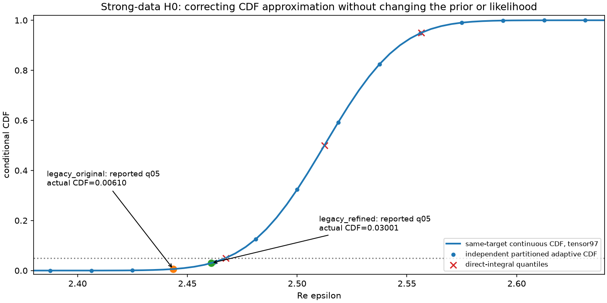
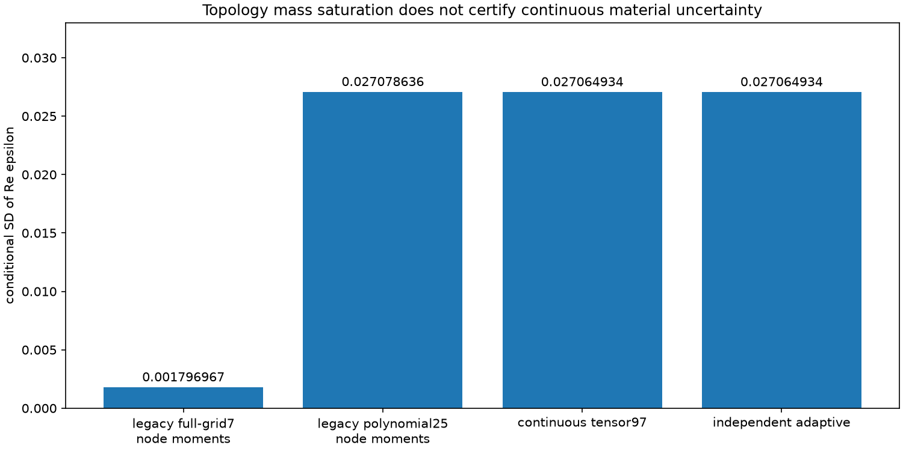
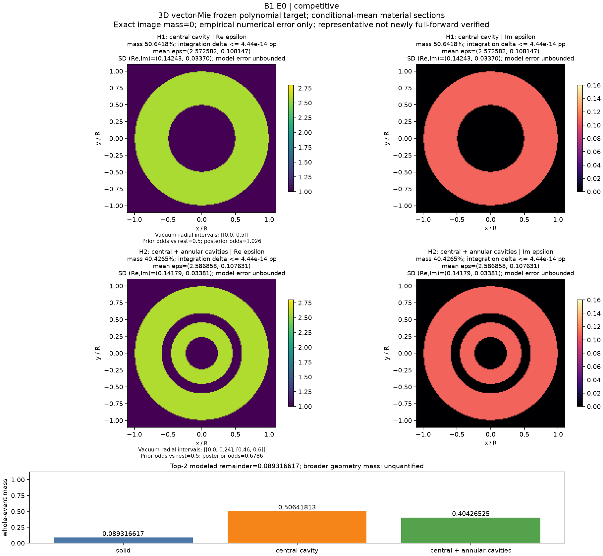
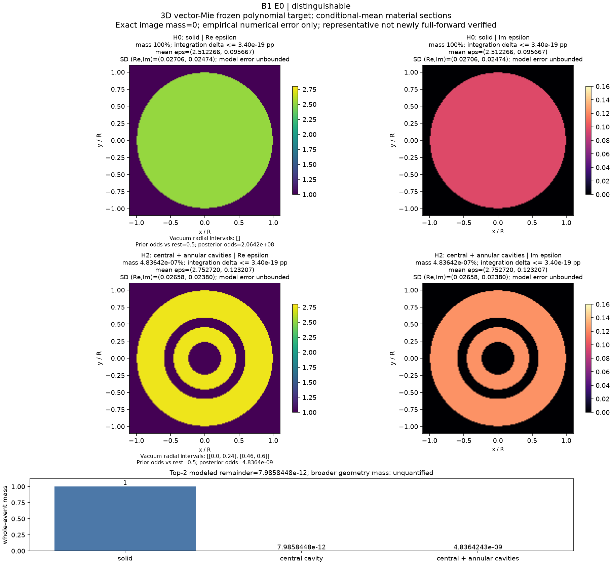
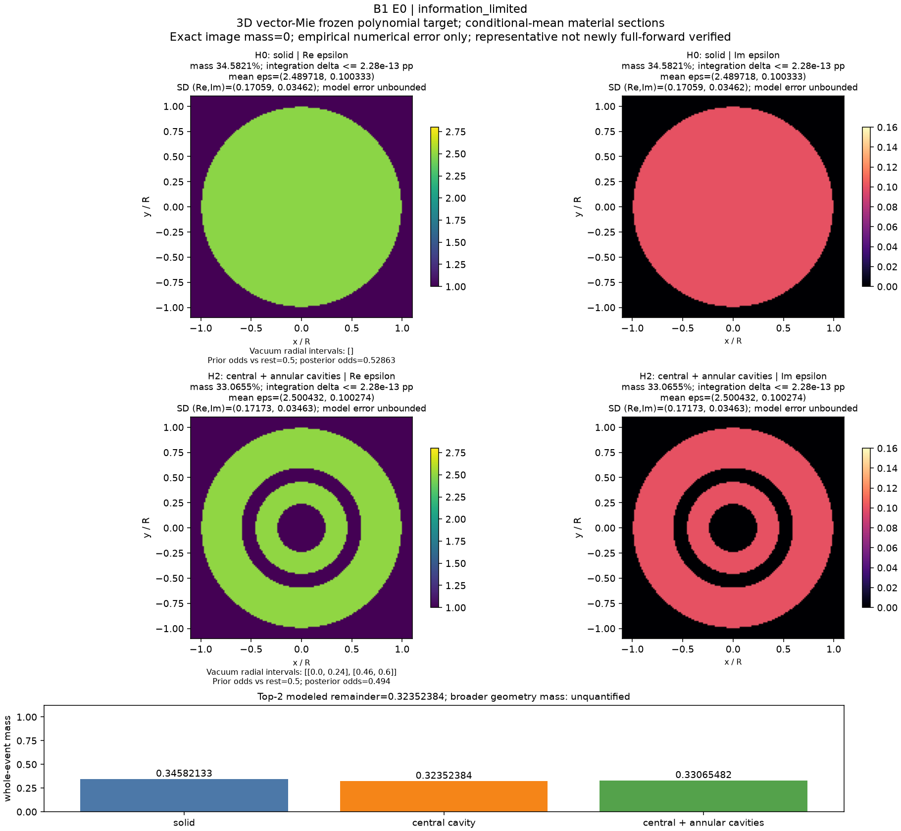
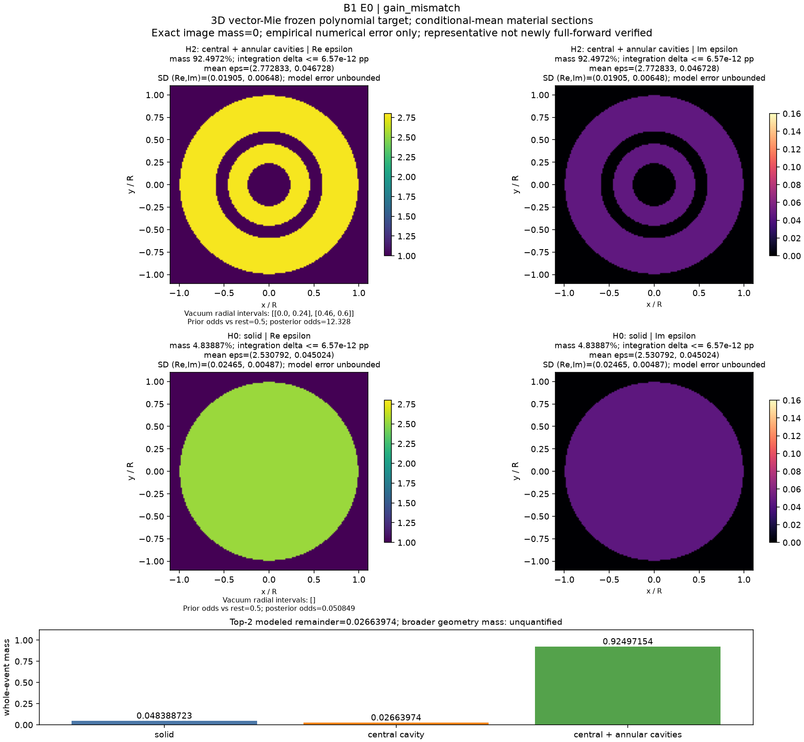
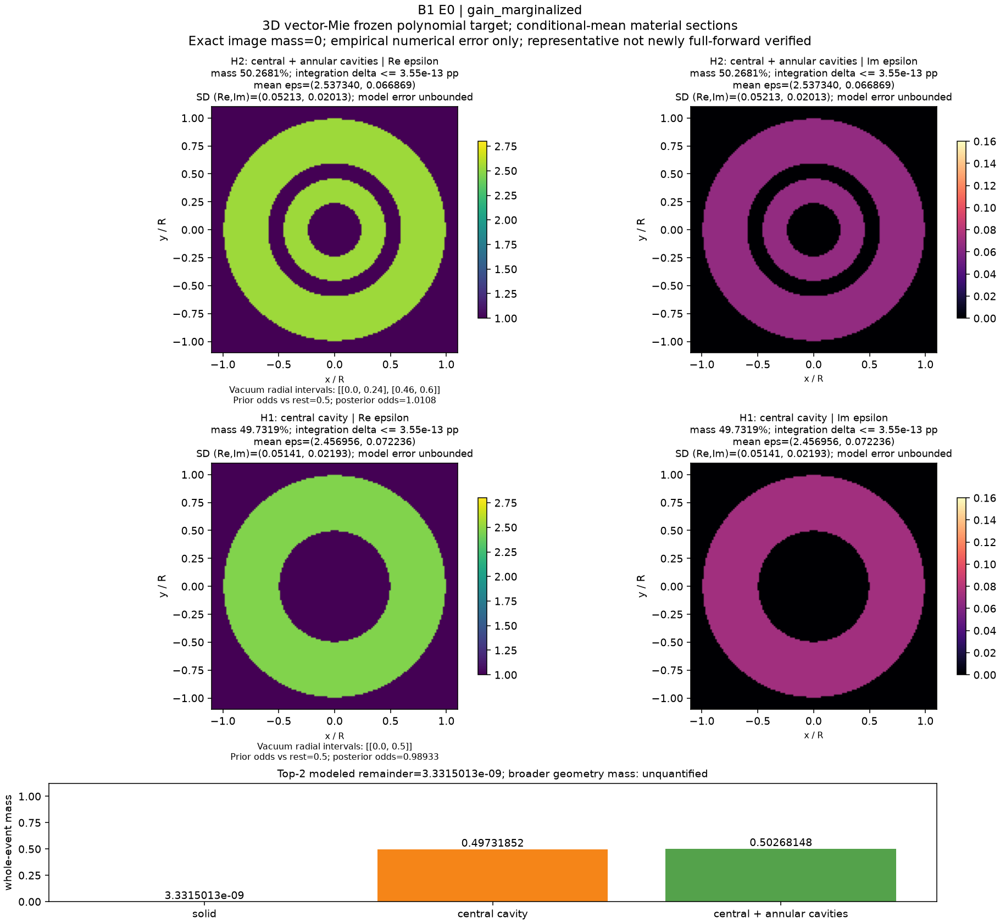
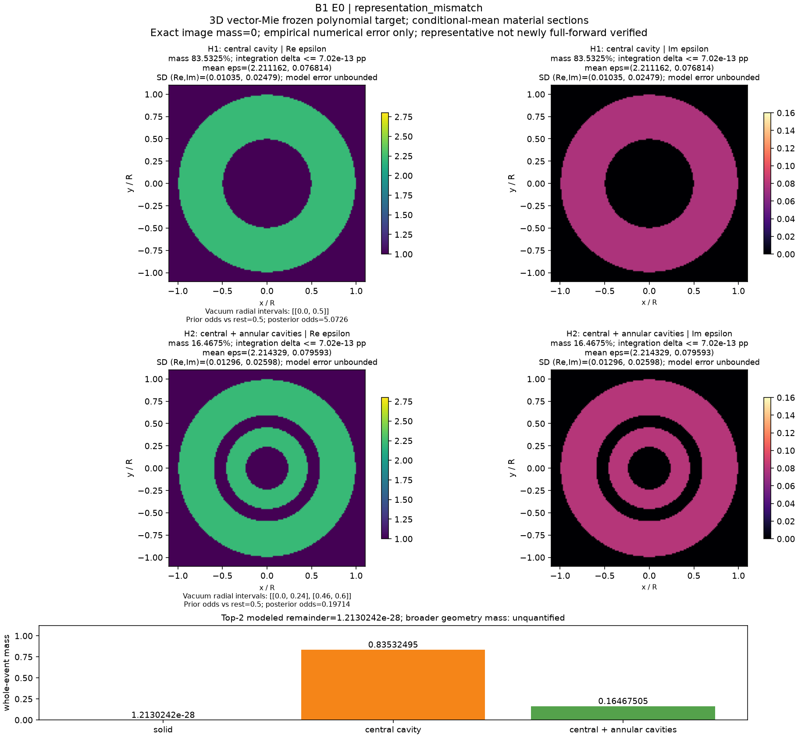

B1 E0：让材料均值、方差和分位数属于同一个后验
2026-10-13。该阶段新增物理预算与实际调用均为0，工作位于独立分支research/b1-e0-posterior-audit。历史384次账本保留，P1的4,000次只是未授权建议。
从基础问题到发现
材料事件的概率是likelihood在整个事件及连续材料参数上的积分；一张连续材料图的精确概率质量为0。传统MAP与最低残差不能代替该积分。同样，稳定的拓扑质量不能保证事件内部的材料不确定性正确。
B1历史模型是三个固定同心模板、连续复介电常数和真实3D矢量Mie响应。主prior为Re ε均匀[2.2,2.8]、Im ε均匀[.04,.16]，拓扑prior各1/3。当前阶段是这个已支付benchmark的数值修复；未把三个模板升级为开放材料生成架构，也没有强制下一阶段按孔洞数分设生成专家。
强信号distinguishable/H0的原生节点方差为3.22909059496e-06，但原分箱q05/q95与均值要求至少约3.1851109e-4。约98.64倍的违反来自两套近似摘要混用，不能归因于evidence归一化错误。72个历史条件坐标记录中检测到5项必要条件不相容；没有违反也不是准确性认证。
明确的posterior target与修复
本阶段使用已经付费的7×7 response网格对应的tensor-Legendre多项式；每坐标最高degree6。5×5对照最高degree4。它们仍是明确的近似forward，不是新增full-Mie求解。
对每个H，Z_H=∫L(F_poly(H,θ);y)dμ_H，p_H=π_H Z_H/Σπ_G Z_G。所有moments、协方差、CDF和quantiles来自同一个连续density。CDF在截断prior矩形上直接积分，quantile通过反解CDF求得，不再将节点质量铺到prior bins。Gauss权重是连续prior积分权重，不是离散候选prior。
实化采用全部16个复通道Re后接Im；σ是固定的每实分量SD，复RMS为√2σ。g~N(1,s_g²)的边缘协方差为σ²I+s_g²FFᵀ，保留candidate-dependent logdet。保存与重放显式携带gain_sd；新NPZ入口拒绝缺失该字段时静默变为known gain。
决定性的连续材料结果
| strong H0 / Re ε | 均值 | SD | q05 | q95 |
|---|
| 历史原生节点/bin混合 | 2.500024354572 | 0.001796967054 | 2.443575757838 | 2.556449329157 |
| 历史经验细化节点/bin混合 | 2.512259756399 | 0.027078635773 | 2.460967528541 | 2.554300794596 |
| 同一连续density积分97 | 2.512266331658 | 0.027064934288 | 2.467483321080 | 2.556513143734 |
在修复target下，原生所报q05实际CDF为0.006095769246，细化所报q05实际CDF为0.030011505243，分别不是5%。这些值来自新的直接截断积分，不是绘图插值。细化moments已经接近收敛，但它的bin-CDF仍有可检测偏差。


独立数值参考与误差边界
主积分按25/41/65/97阶细化，覆盖六案例、三个条件事件和材料边际。独立算法用二维分区自适应5/9点积分，在不同partition节点上重新计算同一density。主CDF网格129点，独立CDF33点并直接反解quantiles。CDF比较只针对已测网格，不能宣称全域sup误差证书。
预定容差为CDF差≤.01、均值/quantile差≤prior宽度×.001、SD差≤max(参考SD×.01,prior宽度×1e-6)，必要variance下界浮点容差为prior宽度²×1e-12。全部六例通过本阶段连续摘要的经验核对，未修改容差。response插值5×5/7×7的差异与likelihood积分误差分列：
| 案例 | 65/97 CDF最大差 | 97/自适应CDF最大差 | 5×5/7×7 response的CDF差 | 独立事件质量最大差 |
|---|
| distinguishable | 2.875e-14 | 1.189e-12 | 1.992e-04 | 3.402e-21 |
| competitive | 2.442e-15 | 1.776e-15 | 3.350e-05 | 4.441e-16 |
| information_limited | 2.665e-15 | 8.882e-16 | 1.001e-06 | 0.000e+00 |
| gain_mismatch | 6.706e-14 | 3.878e-12 | 2.407e-04 | 6.573e-14 |
| gain_marginalized | 3.886e-14 | 3.009e-14 | 1.402e-04 | 3.553e-15 |
| representation_mismatch | 4.673e-13 | 4.050e-13 | 2.546e-04 | 7.022e-15 |
独立积分与相同polynomial target的一致支持数值积分正确性，不证明整个prior上full-Mie插值误差、连续Maxwell极限、漏模式质量或真实仪器模型正确。
Top-K成像与概率语义
| 案例 | H0实心% | H1中心空腔% | H2中心＋环形空腔% | 连续摘要状态 |
|---|
| distinguishable | 100 | 7.9858448e-10 | 4.8364243e-07 | EMPIRICALLY_CONVERGED_CONTINUOUS_SUMMARY |
| competitive | 8.9316617 | 50.641813 | 40.426525 | EMPIRICALLY_CONVERGED_CONTINUOUS_SUMMARY |
| information_limited | 34.582133 | 32.352384 | 33.065482 | EMPIRICALLY_CONVERGED_CONTINUOUS_SUMMARY |
| gain_mismatch | 4.8388723 | 2.663974 | 92.497154 | EMPIRICALLY_CONVERGED_CONTINUOUS_SUMMARY |
| gain_marginalized | 3.3315013e-07 | 49.731852 | 50.268148 | EMPIRICALLY_CONVERGED_CONTINUOUS_SUMMARY |
| representation_mismatch | 1.2130242e-26 | 83.532495 | 16.467505 | EMPIRICALLY_CONVERGED_CONTINUOUS_SUMMARY |
图的材料代表为事件内条件均值ε，在固定模板内合法，但未新增full-forward代表核验。图示为3D材料的2D中心切面。每项附prior/posterior odds、条件SD、数值mass误差及事件定义；Top2保留第三事件余量，不重新归一化。prior外质量0只描述这个封闭prior；更大几何世界未定义，质量保持null/未量化。极小质量的第二模板不能称为发现了第二个重要mode。

prior、nuisance与必要负控制
信息不足数据下，改变拓扑prior显著改变质量；计算不因此矛盾。改变prior的结果拥有独立protocol标识，不能混作原target。相同gain数据分别用known gain与proper marginalized gain处理，likelihood协议不同；前者集中于错误H2，后者H1/H2竞争。补偿profile minimum仍不能替代integrated evidence。
附件零物理代数重放以及Cholesky独立核对通过；保留slogdet的除零/overflow/invalid警告。高ESS漏模式反例、prior-only posterior、同测度坐标变换、radius/volume不同prior、event partition、metadata回放和TopK余量均执行。toy和随机矩阵不作为新增Maxwell物理证据。历史材料coverage使用旧bin-CDF，本阶段没有重算720个data的coverage，不把旧数值沿用为修复后的coverage声明。
成本、失败与可复现性
主推断与controls实际body wall=69.517666s，CPU=67.308709s，实际polynomial evaluations=214,121,615。这些不是物理调用。直接CDF probes和public CLI replay另计，绘图另计；网络、模型服务、交互时间不完整测量。没有新GPU/NN/旧locked数据读取，也没有SHA-256或额外smoke。
四个历史treams oracle数组仍缺失：保存了输入、误差和环境，但不能从旧原始oracle数组重算。后续refine源码保存数组不补齐历史。没有重跑来掩盖缺口。三次原生报告worker尝试因模型容量失败，父Codex接手，不切换provider/model，服务成本未测。全部记录见FAILURES及资源文件。
科研裁决与明确停止
继续保留并修复概率benchmark。E0证实了一个实用反例：拓扑质量饱和与连续材料摘要失真可并存；这属于数值正确性发现，不是新Maxwell可辨识定理。
E1 raw/full-Mie secant、ε及ε+gain补偿、多频、统一implicit radial field和算法机制比较全部NOT_RUN：没有新增物理授权。nuisance-aware nonlinear secant的新增解释力、物理proposal全成本优势、active sensing收益都尚未测试；本阶段不能选择它们为已验证赢家。4,000预算不自动开启，不能借用C1余额。
当前没有IEEE TAP强理论/算法创新证据。停止用高ESS、低residual、拓扑mass稳定或漂亮图替代连续posterior参考；停止把fixed-template benchmark说成统一开放几何成像。下一步在有真实授权时先验证结构信号与nuisance compensation；机制失败则转active sensing或仅保留benchmark，不能无限调噪声制造成功。
公开更新：用户2026-10-13要求研究默认公开。本E0已并入同一个B1仓库；网页报告、研究总览。发布未运行新实验、哈希检查或额外测试。此前未发布的表述保留其历史时间含义，物理授权仍0。
全部情景的材料重建
distinguishable

competitive
information_limited

gain_mismatch

gain_marginalized

representation_mismatch
